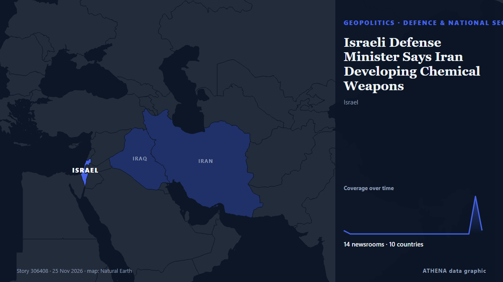

Defence & national security
SponsoredPresented by  Cybernetics and Artificial Intelligence Lab Welcome to the Cybernetics and Artificial Intelligence Laboratory, established at the Department of Business Administration of the National and Kapodistrian University of Athens. The lab is headed by Professor Dimitrios Thomakos. The lab aims to do research that can be published in top venues. Our research uses tools and methods of Artificial Intelligence, and lies in the following areas: - Forecasting - Decision making - Cyber security - Finance We are always looking forward to collaborating with exceptional students!
Cybernetics and Artificial Intelligence Lab Welcome to the Cybernetics and Artificial Intelligence Laboratory, established at the Department of Business Administration of the National and Kapodistrian University of Athens. The lab is headed by Professor Dimitrios Thomakos. The lab aims to do research that can be published in top venues. Our research uses tools and methods of Artificial Intelligence, and lies in the following areas: - Forecasting - Decision making - Cyber security - Finance We are always looking forward to collaborating with exceptional students!
| 12 Nov | 0 |
|---|---|
| 13 Nov | 0 |
| 14 Nov | 0 |
| 15 Nov | 0 |
| 16 Nov | 0 |
| 17 Nov | 0 |
| 18 Nov | 0 |
| 19 Nov | 0 |
| 20 Nov | 0 |
| 21 Nov | 2 |
| 22 Nov | 3 |
| 23 Nov | 10 |
| 24 Nov | 4 |
| 25 Nov | 0 |

Israeli Defense Minister Says Iran Developing Chemical Weapons
Israel's defense minister said Iran could not yet strike Israel with chemical weapons, while Yashar leader Gadi Eisenkot said he saw no immediate threat requiring action before a new government is… from Haaretz (English)
Tension escalates at Suame Magazine as artisans lock shops of foreign spare-parts dealers
By Franklin ASARE-DONKOH Tension has gripped the Suame Magazine industrial enclave in Kumasi, the Ashanti Regional capital, after a group of local artisans stormed the automobile hub and locked up… from GBC Ghana Online
Norway in talks with Ukraine over attacks on Russian ships and regional stability
Norwegian Defense Minister Tore Sandvik said on Tuesday, November 24, that Oslo was holding talks with Ukraine on the “need for stability in our near areas.” from Ukrinform (English)
Israel orders $90 million cut to Gaza and Lebanon border recovery budgets for defense funding
Officials said the cuts would halt projects already underway, even as 5 billion shekels set aside for coalition priorities were spared. from Haaretz (English)
Russia could put nuclear weapon in orbit by end of 2026, German media report
Russia could launch a satellite carrying a nuclear weapon into orbit before the end of the year, according to a joint report by German broadcasters WDR and NDR and the newspaper Süddeutsche Zeitung… from Novaya Gazeta Europe (EN)
Germany to become first country granted access to Ukraine’s DELTA combat system
Ukrainian Defense Minister Yevhenii Khmara and German Defense Minister Boris Pistorius have signed a letter of intent in Berlin on cooperation in the development, deployment and use of the DELTA… from Ukrinform (English)
Russian navy licks its wounds as another warship is sunk
Ukrainian drones have struck Moscow’s warships and freighters in the Black Sea, Baltic and Mediterranean. from to vima
Russia’s Medvedev says nuclear proliferation globally cannot be stopped
The Security Council Deputy Chairman highlighted a balance of rights among parties to the Treaty on the Non-Proliferation of Nuclear Weapons. from TASS (English)
NATO announced deployment of AWACS early warning aircraft to Poland
Earlier in the day, NATO ambassadors discussed violations of Polish airspace. from TASS (English)
Trump has sacrificed US national security for the stockmarket – and that’s a scandal
ANALYSIS: The board of Nvidia has been strong-armed into reinstating a chief executive who could pose a national security risk to the United States – by the American president, no less. from Stuff
Kaliningrad is the Achilles’ heel of Putin in the Baltic Sea
With Kaliningrad’s residents now hearing air-raid sirens and Crimea’s lifelines under fire, Russian “trophy territories” risk turning into winter pressure cookers for both Moscow and the civilians… from EUobserver
Australia Criticizes US Congressional Budget Office Over AUKUS Comments
SYDNEY, Nov 22 (Reuters) – Australian Defence Minister Richard Marles on Sunday criticized the United States Congressional Budget Office over a report that said the AUKUS pact would decrease the… from gCaptain
Poland expects stronger NATO border protection after Russian airspace violations: Defense minister
Expected NATO border support comes amid heightened security concerns along the alliance's eastern flank, including reports of drone activity near Russia's Baltic Fleet facilities in Kaliningrad. from Anadolu Agency (English)
Army chief praises Basij’s role in safeguarding Iran’s security and serving the public
Iranian Army Commander Major General Amir Hatami has praised the Basij Organization for its contributions to national security, public service, and crisis response, saying the volunteer force has… from Tehran Times
Pentagon moves to restrict US-Canada defence ties
WASHINGTON: US Defence Secretary Pete Hegseth has imposed new restrictions on military cooperation with Canada, according to US media, as the Pentagon said Saturday it was refocusing the relationship… from Business Recorder
Zelenskyy meets with UK defense secretary in Kyiv
Zelenskyy says UK has allocated more than $654M in new defense and humanitarian aid for Ukraine. from Anadolu Agency (English)